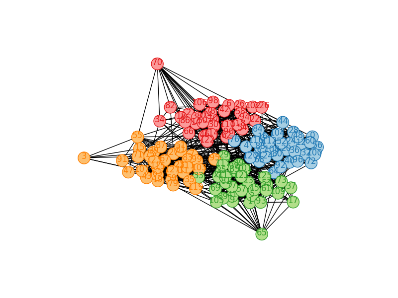

Theory, Mathematics, Implementation and Ground Truth
Posted on Thu 20 August 2015 in GSoC
Introduction¶
This and the last week has been intensivly spent to debug and refine the implementation of the Infomap Algorithm. The implementation is now functionally complete, correct and has been extensivly tested against ground truth graphs with known community structure as well as on real world brain imaging data sets.
Fruthermore a test suite has been realized which provides both regression tests for methods relevant to the algorithm as well as numerical verifications.
This ensures a robust process if there are modifications to be made, refactorings conducted, or the code is simply to be maintained by anohter developer in the future.
The current status of the implementation can always be found on github in the commmunity module.
Commit history can be found both in the fork of CPAC as well as own my private github from earlier iterations of the rewrite.
Theoretical Background¶
For the complexity of the implementation it is to our advantage that the preprocessing (correlation, thresholding) currently carried out in CPAC and in Neuroimaging generally produces undirected graphs. Restricting the input of innfomap to unirected graphs simplifies the forumulation of the map equation.
For undirected networks, the node visit frequency of node $\alpha$ simply corresponds to the relative weight $\omega_\alpha$ of the links connected to the node. The relative weight is the total weight of the links connected to the node divided by twice the total weight of all links in the network, which corresponds to the total weight of all link-ends. (Rosvall, M., Axelsson, D., & Bergstrom, C. T. (2010). The map equation. The European Physical Journal Special Topics, 178(1), 13–23.)
As this is the case for us, it simplifies the formulation of the Map Equation and setup.
A further implication regarding the setup is that the computation of page rank becomes obsolete as the node visit frequencies are given by the relative weight. For more please refer to the Appendix down below. The computation of the exit node probability
is simplified as $q_{i\curvearrowright}$ becomes $\omega_{\curvearrowright}$ and the teleportation terms can be ignored:
$\omega_{i\curvearrowright}$ for the relative weight of links exiting module $i$, and then $\omega_{\curvearrowright} = \sum_{i=1}^{m} \omega_{i\curvearrowright}$ for the total relative weight of links between modules.
The table in the Appendix at the end of the document bewlow shows the difference between the two approaches exemplified by using the infamous karate network.
Our Map equation becomes then eventually:
A detailed reasoning and derivation of it can be found in 1 (Page 7)
The Mathematics and Logic of the Infomap Algorithm¶
Having the map equatuon above (equation \ref{mapeq}) established and in place, we now have to formulate the actual update we will perform while doing the greedy search for the minimum description length.
The update refers to the calculation of the difference in the map equation that would occur if one node would move into the same community as one of it's neighbours. It is a crucial part of the algorithm and the heart of the optimization strategy.
The formula on how to compute the difference in the map equation when doing the greedy search is derived from equation \ref{mapeq}, that is Eq. 5 in the original paper cites above.
In corrospondence with one of the authors Dr. Rosvall was so kind to provide an illustration that illustrates the rational behind the derivation.
We note that the the third term in equation \ref{mapeq} is constant, so we really only need to keep track of the other three terms. Let the term delta_exitcorrespond to changes of the first term, delta_exit_log_exit to changes of the second term (except for the factor -2), and delta_degree_log_degree to changes of the fourth term. The two first terms only depend on the flow between modules. The variable exit will store the value of the first term in equation \ref{mapeq}. To calculate how much it changes by moving the particular node from one module to the other, one needs to figure out how much the total flow between module changes.
Refering to the illustation above: wfromM is the total flow from the node to nodes in the module it is currently assigned to. wfromM is the total flow from the node to nodes in the module it will be assigned to. Since the flow is bidirectional, before the move 2wtoM units of flow moved between the modules and after the move 2wfromM units of flow will move between the modules. Therefore the change is 2wtoM - 2wfromM. Note: The flows to other modules will not change the total flow between modules, such that the new flow between modules will be (if it previously was exitDegree): exitDegree - 2*wtoM + 2*wfromM. To calculate the change in code length from the first term in equation \ref{mapeq} one simply calculates new code length - old code length:
or in code:
delta_exit = plogp(exitDegree - 2*wtoM + 2*wfromM) - exit
The remaining terms are derived by analogus reasoning.
Implementation¶
This core computations can be found in my implementation at the github repo withing the method determine_best_new_module.
Here an excerpt of this core part:
node_i_exit = self.graph.node[pick][EXIT]
node_i_degree = self.graph.degree(pick, weight="weight")
delta_exit = self.plogp(self.exitDegree - 2.*wtoM + 2.*wfromM) - self.exit
delta_exit_log_exit = - self.plogp(self.mod_exit[fromM + correction]) \
- self.plogp(self.mod_exit[toM + correction]) \
+ self.plogp(self.mod_exit[fromM + correction] - node_i_exit + 2.*wfromM) \
+ self.plogp(self.mod_exit[toM + correction] + node_i_exit - 2.*wtoM)
delta_degree_log_degree = - self.plogp(self.mod_exit[fromM +correction ] + self.mod_degree[fromM +correction]) \
- self.plogp(self.mod_exit[toM + correction] + self.mod_degree[toM + correction]) \
+ self.plogp(self.mod_exit[fromM +correction ] + self.mod_degree[fromM +correction] - node_i_exit - node_i_degree + 2.*wfromM) \
+ self.plogp(self.mod_exit[toM + correction] + self.mod_degree[toM + correction] + node_i_exit + node_i_degree - 2.*wtoM)
deltaL = delta_exit - 2.0 * delta_exit_log_exit + delta_degree_log_degree
Simimlar then when the node is about to be moved into the neighbour community detrmined which minimizes the description length the most the updates are as follows:
node_i_exit = self.graph.node[pick][EXIT]
node_i_degree = self.graph.degree(pick)
self.exitDegree -= self.mod_exit[fromM + correction] + self.mod_exit[bestM + correction]
self.exit_log_exit -= self.plogp(self.mod_exit[fromM + correction]) + self.plogp(self.mod_exit[bestM + correction])
self.degree_log_degree -= self.plogp(self.mod_exit[fromM + correction] + self.mod_degree[fromM + correction]) + self.plogp(self.mod_exit[bestM + correction] + self.mod_degree[bestM + correction])
self.mod_exit[fromM + correction] -= node_i_exit - 2.*wfromM
self.mod_degree[fromM + correction] -= node_i_degree
self.mod_exit[bestM + correction] += node_i_exit - 2.*best_weight
self.mod_degree[bestM + correction] += node_i_degree
self.exitDegree += self.mod_exit[fromM + correction] + self.mod_exit[bestM + correction]
self.exit_log_exit += self.plogp(self.mod_exit[fromM + correction]) + self.plogp(self.mod_exit[bestM + correction])
correction] + self.mod_degree[bestM + correction])
self.exit = self.plogp(self.exitDegree)
self.code_length = self.exit - 2.0 * self.exit_log_exit + self.degree_log_degree - self.nodeDegree_log_nodeDegree
self.modules[pick] = bestM
With the right data structures these concepts can be expressed almost naturally in code.
Empirical Tests With Ground Truth Graphs¶
In the context of evaluating/debugging the implementation, data with attached ground truth is necessary.
For more backgroud please refer to the The Many Truths of Community Detection (Community detection in networks: Structural communities versus ground truth)2.
Girvan ground truth graphs¶
Girvan 3, describes in his paper a method of creating artificial ground truth graphs for testing of community detection algorithms.
The graph was constructed with 128 vertices divided into four communities of 32 vertices each. Edges were placed between vertex pairs independently at random, with probability P_in for vertices belonging to the same community and P_out for vertices in different communities, with P_out < P_in. The probabilities were chosen so as to keep the average degree z of a vertex equal to 16. This produces graphs that have known community structure, but which are essentially random in other respects.
Depicted is such an automatical created graph as it is implemented in the test suite for the infomap implemention with 4 communities. The implemented infomap algorithm correctly identifies these 4 communities and colors the node associations accordingly.
This is ensured by 1) visual inspection of the custers and 2) numerical tests for which community of node = node modulo 4 must hold according to the definition.
In the following a visualization generated of the graph and it's correctly detected communiteis.

Zachary's Karate Club¶
Another (very famous) ground turth graph for which the infomap implementation identifies the same communities as the reference.
Real World Brain Imaging Data¶
Lastly, we want to evaluate the results of the community detection via our infomap implementation over some real world data. For this purpose we used 29 subjects from the ABIDE dataset (Yale Site).
These 29 subjects have later been split up into 2 groups (n=14 and n=15) according to the behavioural meta data available within in the dataset. To concentrate on evaluating the community detection algorithm we made use of the preprocessed timeseries. These ROI's timeseries have been extracted according to the CC400 Atlas.
Of course here no ground truth data is available. For this we compute various analytical metrics to verify the plausiblity.

For illustration a depiction of the generated plot for one subject out of the 29.
This figure depicts a plot of the community size distribution for one subject. The Infomap algorithm computes a hierachy/dendrogram of 2 levels (0-1) for this particular subject. The community size distribution for each level is superimposed on each other in this plot.
The figure exhibts a common pattern: The community size distrubtion follows approximately a declining exponential curve - also an expected pattern which gives another signal of the correctness and reasonableness of the implementation empirical.
In conclusion, a boxplot of the statistics of the community size distribution grouped per level
Rosvall, M., Axelsson, D., & Bergstrom, C. T. (2010). The map equation. The European Physical Journal Special Topics, 178(1), 13–23. http://doi.org/10.1140/epjst/e2010-01179-1↩
Community detection in networks: Structural communities versus ground truth Darko Hric, Richard K. Darst, and Santo Fortunato Phys. Rev. E 90, 062805. http://arxiv.org/pdf/1406.0146v2.pdf↩
Community Structure in social and biological networks. Girvan newman, 2002. PNAS June, vol 99 n 12↩
Appendix¶
PageRank converges to Node degree¶
For undirected graphs this theorem can be even more relaxed:
The Node degree can be identified with the result of the stationary distribution of the markov process which in turn is closely related to a forumulartion of PageRank. The following python code illustrates this numerical.
import networkx as nx
import numpy as np
import pandas as pd
graph=nx.karate_club_graph()
page_rank=nx.pagerank(graph).values()
relative_weight = [float(graph.degree(i))/sum(graph.degree().values()) for i in graph]
difference=map(lambda x, y: abs(x-y), page_rank, relative_weight)
pd.DataFrame(difference, columns=['Absolute differences pagerank vs. relative weight (true empirical value)'])